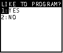

| HOME >> Tutorials >> Tutorial 9: Menus |
Introduction:
In this tutorial, we will learn how to use the Menu( command. Do you remember back in Tutorial 5 and Tutorial 6 where we were doing Input and Prompt? We had to do use Input along with and If-Then-Else statement just to ask a yes/no question. Well you can do that and other questions with more than two choices with the Menu( command. You may be thinking, "I wonder what a menu looks like?" Well, you already know what it looks like, because you have definitely used them before. When you press and you scroll down to find a command, you are using a menu! The only problem is that in our menu we cannot scroll down past 7 choices like you can in the menu.
New Command:
| Menu( | Generates a menu with up to seven items |
Menu("title","text1",label1[,...,"text7",label7])
The Code:
Once again there's only going to be one set of code this time. I'm going to use the same program that I used back in Tutorial 5, but this time I'm using the Menu( command.
| : | For AShell, SOS, and TI-Explorer |
| ClrHome | Clears the home screen |
| Lbl A | |
| Menu("LIKE TO PROGRAM?","YES",1,"NO",2) | Displays a menu and ask if you like to program with the choices of "yes" or "no" |
| Lbl 1 | |
| Output(4,7,"COOL") | Displays "COOL" |
| Stop | End the entire program |
| Lbl 2 | |
| Output(4,5,"NOT COOL") | Displays "NOT COOL" |
 and
OR
and
Further Explanation:
I only want to explain and discuss a couple of things. The only drawback of the Menu command is that the title can only be 16 characters. When we are using Input, we can program in such a way that the Input can seem longer than 16 characters. In the program in Tutorial 5, the title was "DO YOU LIKE TO PROGRAM?", but since that's too long I had to shorten it to "LIKE TO PROGRAM?" Either way, you still understand what the question is. Second, notice how I had to use the Stop command in Lbl 1, but I didn't have to in Lbl 2. This is the situation where stop is generally used -- when it's in the middle of a program. If I didn't put the Stop there before Lbl 2, the program will display "COOL" and then overwrite it with "NOT COOL" -- it'll display both, when I only want it to display "COOL." You don't need the Stop in Lbl 2 because it's the end of the program and it has to stop.
Version 2.0 Update:
There are also other ways of making menus. Acutally they are what I call "user-created menus." If you would like to skip ahead and take a peak, go to Tutorial 23.
Conclusion:
Menu( is used a lot in those "text-only" games, where they ask for a lot of choices. Next, we are going to learn more loops using Repeat and While.
If you do not understand a particular part in this lesson, have suggestions, or find any problems please contact me.
|
|
| Tutorial 8 | Tutorial 10 |